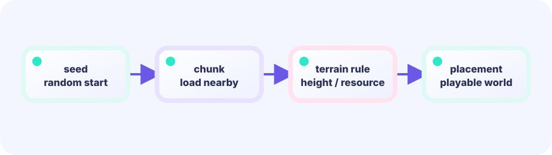

Split a world cell into chunk parts
World tile x divided by 8 gives chunk x; the remainder gives local x. A floor-division helper handles negative coordinates correctly.
chunkX = floorDiv(tileX, 8)★★★☆☆ / PLAYABLE
Split the world into 8×8-cell regions, generating, loading, and drawing only those near the camera.
FIRST-TIME READER
Find where this one line is used, then follow how its value changes on screen. This is the shared Update → Draw skeleton for the whole path; the numbered steps below add one system at a time.
ONE RULE TO TRACE
Match the explanation to this line, then test the change in the game.
chunkX, localX := x/256, x%256
PLAYABLE / WEBASSEMBLY
Explore with arrows/WASD or the bottom direction buttons. Thick gold lines mark chunk borders. The top shows coordinates, cached chunks, and chunks drawn now.
DEEP DIVE / CHUNK CACHE
Instead of holding every world cell at once, treat each 8×8 region as a chunk. Generate a region only when the player approaches, store it in a map, and keep off-screen chunks cached without drawing them.
World tile x divided by 8 gives chunk x; the remainder gives local x. A floor-division helper handles negative coordinates correctly.
chunkX = floorDiv(tileX, 8)Check the 5×5 area around the camera center and generate only keys missing from the map. Returning reuses the same data.
chunks[key] = generateChunk(key)Convert the camera's top-left and bottom-right to chunk numbers and draw only between them. Draw cost stays steady as the cache grows.
for cy := minCY; cy <= maxCY; cy++TRY IT / CAMERA WINDOW
Move the player, then make the camera follow. The real game divides this camera position by eight tiles to choose needed chunks.
TRY IT · GO
target := playerX - screenW/2 camX += (target - camX) * 0.15 drawX := worldX - camX
—
IN THE REAL GAME
Update fills the cache around the current chunk. Draw only reads keys overlapping the camera and never generates.
center := playerChunk()
for cy := center.y-2; cy <= center.y+2; cy++ {
for cx := center.x-2; cx <= center.x+2; cx++ {
key := chunkPos{cx, cy}
if _, ok := chunks[key]; !ok {
chunks[key] = generateChunk(key)
}
}
}WHY CACHE?
A collected beacon becomes grass inside its chunk. Reusing cached data keeps it collected when you return.
WHY CULL?
After visiting one hundred regions, drawing only the few visible cards keeps each frame's work bounded.
TRY NEXT
Move chunks more than ten regions away into save data, then remove them from the in-memory map.
FEEDBACK